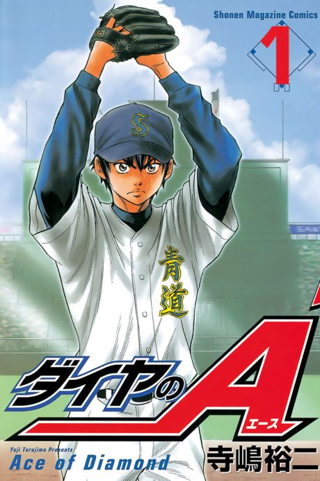

Ace of the Diamond
ダイヤのA
We haven't found where the anime ends in the manga yet.
8.0AniList score
—Animeter, no votes yet
194episodes, 5 seasons
Filler
5 of 178 episodes are filler and 2 mix canon with filler. Episodes are numbered straight through: Ace of the Diamond 1–126, Ace of the Diamond: Act II 127–178.
Episodes178
Canon171
Filler5
Mixed2
123456789101112131415161718192021222324252627282930313233343536373839404142434445464748495051525354555657585960616263646566676869707172737475767778798081828384858687888990919293949596979899100101102103104105106107108109110111112113114115116117118119120121122123124125126127128129130131132133134135136137138139140141142143144145146147148149150151152153154155156157158159160161162163164165166167168169170171172173174175176177178
CanonMixedFillerRecap
Skip list (filler episodes)
28, 76–78, 155Sources: Anime Filler List, Anime Filler List